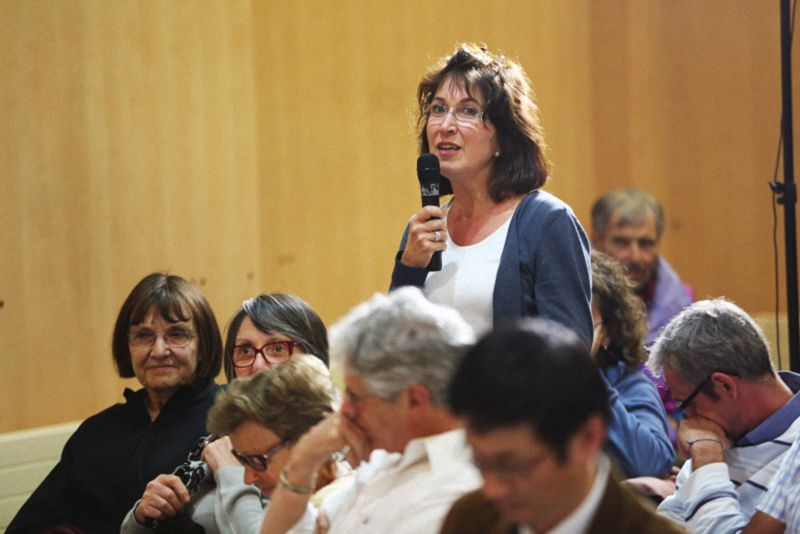

法国多芬尼综合大学问答
『2015年10月2日』
（一）问：您多次提到要致力于学习，但您不觉得会有一些阻碍吗？当一个人上了年纪，似乎很难坚持学习，很难在身心等方面继续发展。
答：当然，每个人的情况不尽相同。有些人在得了重病，或者生活发生变故的时候，会有中断学习的情况；但有些人即便在最危急的时刻，也不会停止学习。
我认识一位藏传佛教大德，他得了癌症，住在北京的医院里。医生跟他说还有15天寿命，但他好像不觉得痛苦，拿着一本厚厚的书不断地看、不断地学，直到生命最后一刻。这让我很惊讶，特别希望自己将来在任何情况下，都能不放弃学习。
其实我以前身体不太好，从藏语翻译成汉语的好几本书，也是在医院完成的。上海仁济医院、北京的医院、成都的医院、杭州的医院，都各自完成过一部论典，有些比较厚，有些薄一点。印象中，当时的身体特别不好，但每天还是在坚持翻译、学习。
这不是吹牛，很多汉族人都知道，书后面也有相关的文字记录。

（二）问：在您看来，我们何时进入老年期，这取决于个人还是其他因素？
答：根据2013年联合国卫生组织的调查，说人类44岁之前都是年轻人。（笑）
（三）问：在众多书目中，您能否推荐一本适合我们学习的书？趁我们还不是太老。
答：我推荐一本马修和他父亲对话的《僧侣与哲学家》。虽然你只要一本，但我想推荐两本，另一本是长期居住在法国的藏族学者索甲仁波切的《西藏生死书》，建议你学习这两本书，可以吗？
（四）问：第一个问题，您刚才谈到的“知识”，是指学习的特定内容还是对智慧的理解？第二个问题，如果死亡时，我们学到的知识没有起作用，是否来世还能从中受益？想请您详细解释。
答：我不确定你有没有宗教信仰，所以没办法给出确定的回答。如果有信仰，像藏族人到了一定年龄，会更加重视来世，多学习善法、临终方面的教言；如果没有信仰，我也会建议你学习，因为它会让人生更有意义，让生命更有价值。这是第一个问题。
第二个问题，对不承认前生后世的人，前面提到的格言不一定能让他获益，但在佛教和基督教的教义中，都承认人有来世，只不过基督教对“做好事上天堂、做坏事下地狱”并没有详细解说。而佛教对前生后世的道理，有更加细致入微的阐述，让人清楚明白。
至于今生所学的知识，来世怎么能得到？很简单，有些人从小对某个学问非常精通，稍微一听，马上领悟；有些人对流行歌曲一学就会，甚至没有学过，也能歌善舞，这都跟前世串习有关。相反，有些人怎么学也学不懂，说明他的前世心识中就没有储存这方面的知识。以此类推，今生的储备，也会在来世显现。
如果详细研究，这些问题其实已经不是宗教范畴，而是有关人类灵魂是否存在的探讨。
（五）问：我对您刚才提到的神奇咒语比较感兴趣，它可以让我们、我们的亲人，甚至整个人类都得到幸福。您能否教我们念诵这个咒语？我们可以自己念，也可以教给感兴趣的朋友。
答：这个咒语很简单，不过它的念诵方法有六个字的也有七个字的，“嗡玛尼贝美吽”或者“嗡玛尼贝美吽舍”。
既然她这样要求，我念一遍，你们念一遍：
嗡玛尼贝美吽……
嗡玛尼贝美吽舍……
（六）问：我先生是法国人，我们经常会讨论哲学上的问题。我说：“从佛学角度看，把自己的幸福放得小一点，让别人幸福，才能给你带来真正的快乐。”而法国人的观点很实际，他说：“我自己都不幸福，怎么能把幸福给别人？”这两个观点看起来是完全冲突的。所以我希望您对今天的主题再定义一下，什么是幸福生活？对这个冲突性的观点，您的看法是什么？
答：东方人和西方人的思维模式确实有点不同。但在细节上，其实没有太多冲突。这种想法很多中国人也有：“自己都不幸福，干吗还要给别人幸福？”
但实际上，在利他思想看来，当我们想把幸福带给别人的时候，自然而然就会获得幸福；相反，我们的痛苦大多是自私自利心导致的，对自己越执著，可能越得不到幸福。就像前面说到，很多老年人热衷于服务社会，在这个过程中，自己也忘掉了很多痛苦。
家庭中有不同的思想很正常，慢慢磨合，这些分歧会统一的。就像国家与国家之间也有很多冲突，但20世纪的冲突到了21世纪，也会有很大不同。
其实，如果要给“幸福”下个定义，我觉得它是一种满足感。就像喝一杯卡布奇诺，或者一杯茶，如果我特别开心，感到了满足，这就是幸福；而如果没有满足感，即使有几亿美金，也不一定幸福。
幸福，安立在心上。
（七）问：在中国乃至全世界，都存在很多“老无所依、老无所养”的现象。而且中国的“啃老”现象特别严重，年轻人会把属于他们的社会压力强加给老人，有些老人甚至不得已要外出工作。我想请问您对这个问题的看法和建议是什么？
还有一个问题源于我自身的好奇。自从反物质被发现后，它就提供了侧面的依据来证明：可能存在造物主。所以想请问您，作为一位学佛者，您是否相信佛陀和造物主的真实存在？
答：首先第一个问题，在中国或全世界来讲，老人的状况各有不同。我见过很多地方对老人比较关爱，敬老方面做得相当好；但也有一些地方，老人问题确实比较严重。比如日本，个别一线城市会要求老人迁居二线城市，或者更偏僻的地方——他们称之为“弃老山”，舍弃老人的山。
但从总体来看，也不是没有希望，虽然孩子和父母之间的感情比以往有所淡化，但如果能把传统文化中古人的慈爱教育不断加强，人与人之间的关系应该会有所改善。
我们看待问题，应该一分为二。由一个地方的情况类推到所有地方，以一概全，这是不合理的。
第二个问题。我作为佛教徒，确实相信佛陀的存在。如果你去印度，在佛陀降生、成道、转法轮等地方一一观察，就能发现这一点；佛陀当时宣说的法，现在也有文字记载，这些都是历史上真正发生过的。至于造物主的真实性，你可能要去询问那些承认造物主的宗教，他们应该也有比较合理的回答。